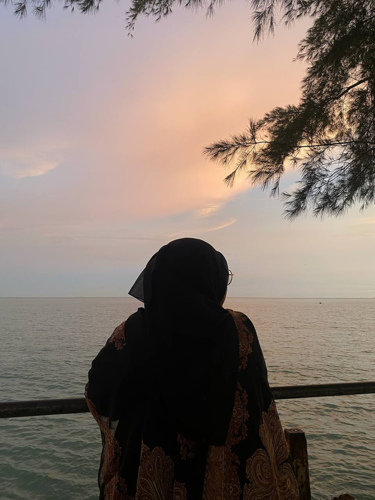

♥ MY PROFILE ♥
My name is Nuraina Hanani Binti Mohd Zamri. I am 20 years old and was born on 2nd June 2005 at Shah Alam Medical Centre, Selangor. I currently live in Taman Nilam, Sungai Terap, 45500 Tanjong Karang, Selangor. I am a diploma student in Information Sciences at Universiti Teknologi MARA (UiTM) Merbok, Kedah.
In terms of family, there are six people in my household, including myself. I am the third child out of four siblings, which has taught me a lot about cooperation, responsibility, and understanding others’ perspectives. My father, Mohd Zamri bin Jaya, is self-employed and works hard to support our family. My mother, Fauziah binti Arshad, is a dedicated teacher who has always emphasized the importance of education and lifelong learning.
In terms of personality, I believe I am someone who is easy to get along with. People often say that I’m funny even when I’m not trying to be! 😄 This trait has helped me form good relationships with others and makes it easier for me to connect and communicate with new people.